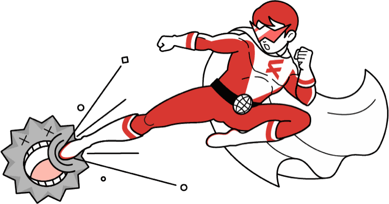
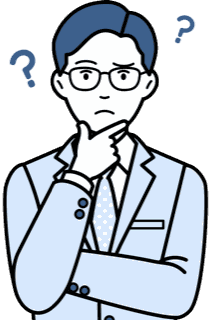
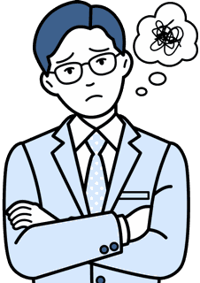
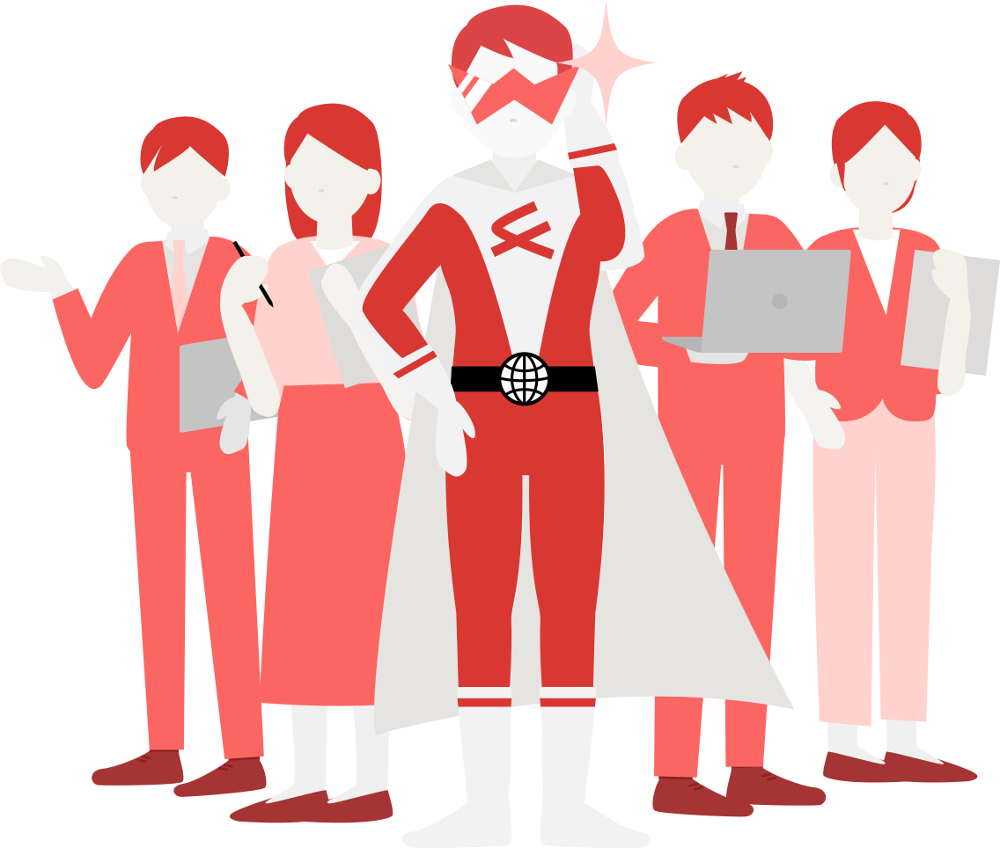

HOW WE WORK
RE DESIGN の進め方事業を知り、
役割を決め、
意図をこぼさずつくる。
-

こんなお悩みに何を載せればいいのか、
わからない話を聞き、整理する
伝えたいことを、
一緒に整理する。資料や原稿がそろっていなくても大丈夫です。事業のこと、届けたいお客様のこと、商品・サービスの強みを伺いながら、「誰に、何を伝えるか」を一緒に整理します。
事業のことは、お聞かせください。
伝わる形にするのは、
私たちの仕事です。 事業何をしている？
事業何をしている？ お客様誰に届けたい？
お客様誰に届けたい？ 強みなぜ選ばれる？
強みなぜ選ばれる？
誰に、何を伝えるかが決まる
-

こんなお悩みに作ったものの、
問い合わせに
つながっていない集客と伝え方を考える
どう知ってもらうかを考え、
ホームページの
役割を決める。届けたいお客様によって、情報を探す場所や、問い合わせまでに必要な情報は変わります。検索・広告・SNSなど、お客様との出会い方から考え、ホームページに持たせる役割と形を決めます。
- 1届けたい
お客様を知る - 2情報を探す
場所を考える - 3集客の方法を
選ぶ - 4ホームページの
役割を決める - 5問い合わせまでを
設計する
- 見つけてもらう方法の例
- 検索・リスティング広告
- SNS・SNS広告
- SEO・記事
- LINE などでの案内
- 紹介・既存のお客様
- ホームページの形の例
- 1 ページで伝える LP
- 小規模サイト
- コーポレートサイト
- EC サイト
すべてを行うのではなく、
案件に合わせて選び、ご提案します。ホームページの役割と形が決まる
- 1届けたい
-
こんなお悩みに最初に伝えた意図が、
完成したサイトに
反映されなかった設計と制作をつなぐ
決めた意図を、
つくる途中で
こぼさない。事業の背景や商品への思い、「なぜこの内容にしたのか」まで、引き継ぎだけで伝えるのは簡単ではありません。RE DESIGNでは、最初に話を聞き、伝え方を設計した担当者が、原稿・デザイン・実装・公開まで関わり続けます。

- ヒア
リング - 設計
- 原稿・
デザイン - 実装
- 公開
設計責任者が、すべての工程に関わり続ける
案件に応じて、デザイナー、イラストレーターなどの専門パートナーとチームを組みます。
決めた意図が、そのまま形になる
- ヒア